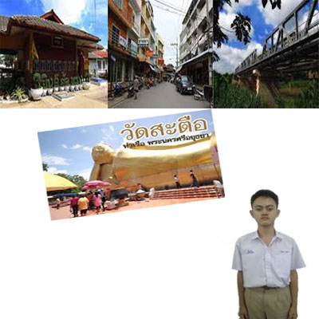

สถานที่ท่องเที่ยว
วัดสะตือ อำเภอท่าเรือ จังหวัดพระนครศรีอยุธยา
หลวงพ่อโต วัดสะตือ อยุธยา พระพุทธไสยาสน์ พระนอนที่ใหญ่ที่สุดของไทย เป็นหนึ่งของการไหว้พระเก้าวัดในจังหวัดอยุธยา วัดสะตือเป็นอีกหนึ่งวัดที่อยู่ในรายชื่อของการท่องเที่ยวทางธรรมะ
วัดสะตือเป็นวัดที่หลวงพ่อโตหรือหลวงปู่โต หรือ สมเด็จพระพุฒาจารย์ (โต พรหมรังสี) ซึ่งท่านเป็นผู้แต่งและเรียบเรียงบทสวดมนต์ที่มีความขลังมากที่สุดคือ คาถาชินบัญชรวันนี้ผมพามาเที่ยววัดบ้านผมเองครับ คือวัดสะตือ อยู่ที่ ตำบท่าหลวง อำเภอท่าเรือ จังหวัดพระนครศรีอยุธยา
มาไม่ยากครับ เพราะหลังวัด(หน้าวัดในอดีตที่อยู่ติดน้ำ) สามารถชมเขื่อนพระรามหก ซึ่งเป็นเขื่อนแห่งแรกของไทยในอดีตทางวัดเคยสร้างหลังคาให้องค์หลวงพ่อ
แต่ก็มีเหตุให้ไม่สามารถสร้างได้ จนต้องลื้อสิ่งก่อสร้าง เสาปูนออกไป จนมีชาวบ้านบางคนบอกว่า หลวงพ่อโตมาเข้าฝันบอกว่าไม่ชอบหลังคาที่สร้างให้ จนทุกวันนี้ องค์หลวงพ่อตั้งอยู่กลางแจ้งเช่นนี้
สำหรับผมจะไปเที่ยววัดช่วงตอนเย็น เพราะผมชอบไปยืนริมน้ำชมวิวหลังวัด รับลมเย็นๆ แล้วมาหยุดยืนชมองค์หลวงพ่อโต ด้วยความสงบและศรัทธาในวันหยุดจะมีประชาชนมาเที่ยว ไหว้พระ ขอพรกันไม่ขาดสาย
ในบริเวณวัดก็มีตลาดนัดขายสินค้า อาหารมากมาย บ้างก็มารำแก้บน จ้างแตรวงบรรเลง พร้อมๆกัน 4-5วง เสียงดังไปทั่ว ดูสนุกสนาน ที่วัดสะตือนี้ขึ้นชื่อว่าเป็นวัดที่มีคนมาแก้บนด้วยวิธีรำแก้บนพร้อมแตรวง มากที่สุดวัดหนึ่งของไทย